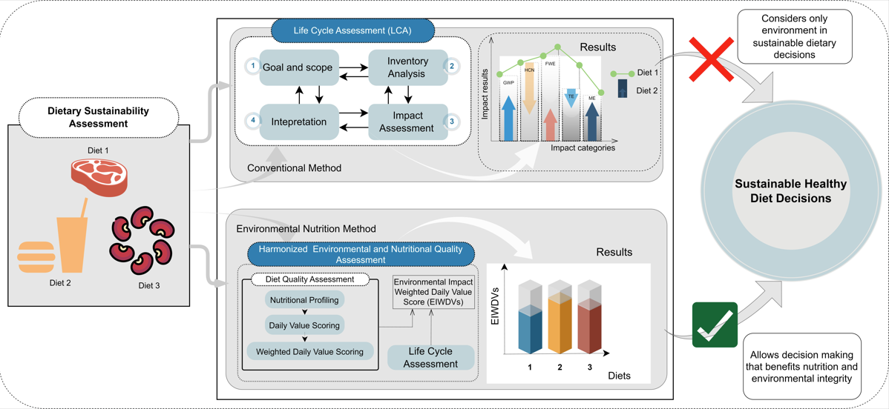

A New Environmental Nutrition Assessment model presented in a publication by lead author Raphael Aidoo.
May 2, 2023
A recent reasearch by lead author Raphael Aidoo, presents a new environmental nutrition model to simultenously assess the
the sustainability of the products. TThe model is further demonstrated through a case study application. Below is the summary and key finding
of the research paper.
Background
Environmental nutrition is gradually replacing the environmentally siloed sustainability assessment models to
enhance sustainable dietary decisions. However, prominent concerns like the incomprehensive representation of
nutritional quality and the difficulty in replicating existing models continue to limit the application of
environmental nutrition.
Goal/Objective
In addressing this, the current study presents an easily replicable and comprehensive
nutrition mediated life cycle assessment approach termed the Environmental Impact Weighted Daily Value score (EIWDVs) model.
This newly developed model comprehensively captures nutrient quantity in a daily value perspective as a nutritional indicator,
and environmental impacts results as environmental indicators in the estimation of a nutrition mediated sustainability score.
For validation purposes, the study applied this new model and the life cycle assessment (LCA) methodology, respectively,
for comparing animal and plant-based foods within two major food categories: dairy products and analogs (e.g.,
cow milk versus soymilk) and meat and alternative meat products (e.g., beef sausage versus soy meatballs) in
a defined future market scenario.
Key findings
Life cycle assessment and environmental nutrition results proved the plant-based alternatives to be
sustainable dietary alternatives for achieving environmental nutrition co-benefits. For instance, production of soymilk
and soy meatballs could offset up to 64–85% of global warming potential relative to cow milk and beef sausage.
About 10% increase in offset values for global warming potential can be achieved when environmental nutrition is
considered in dietary sustainability assessment. Nonetheless, the authors challenge the possibility of completely
displacing animal-based diets, outlining existing gaps in global capacity and social acceptance, dynamic consumer
behavior, and other socio-cultural factors as critical constraints to such a transition.
Therefore, an integrated sustainable dietary system that considers plant and animal products with appreciable
environmental nutrition performances is proposed as a feasible starting point for a gradual transition to a
future of sustainable healthy dieting.